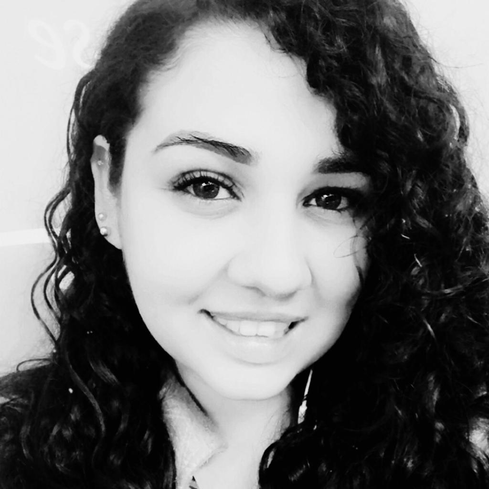

Mauna Alves Reis
Desenvolvedor Frontend Júnior


Sobre
Oie! Meu nome é Mauna, seja bem-vindo(a)!
Sou uma engenheira formada, que se encantou pela programação. Comecei meus estudos por conta própria a pouco tempo, mas como dizem , a internet ensina tudo. Então já possuo conhecimento em HTML, CSS e JavaScript. Gosto de estudar e aprender, sei que pode parecer meio nerd e careta, mas é sempre bom ter um mínimo de conhecimento sobre os assuntos que nos interessam. Apesar de inicialmente ser tímida, gosto muito de conversar sobre diversos assuntos. Gasto meu tempo livre com livros (romance, ficção, etc chega de estudos neh), música, anime e natureza.